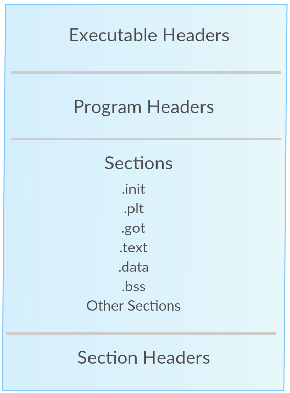

Behind the Scenes(Reversing)
{kind=link}
#include "out.h"
int _init(EVP_PKEY_CTX *ctx)
int iVar1;
Var1 = **gmon_start**();
return iVar1;
}
void FUN_00101020(void)
{
// WARNING: Treating indirect jump as call
(*(code *)(undefined *)0x0)();
return;
}
oid __cxa_finalize(void)
{
__cxa_finalize();
return;
}
// WARNING: Unknown calling convention -- yet parameter storage is locked
int strncmp(char *__s1,char *__s2,size_t __n)
{
int iVar1;
iVar1 = strncmp(__s1,__s2,__n);
return iVar1;
}
// WARNING: Unknown calling convention -- yet parameter storage is locked
int sigaction(int __sig,sigaction *__act,sigaction *__oact)
{
int iVar1;
iVar1 = sigaction(__sig,__act,__oact);
return iVar1;
}
// WARNING: Unknown calling convention -- yet parameter storage is locked
void * memset(void *__s,int __c,size_t __n)
{
void *pvVar1;
pvVar1 = memset(__s,__c,__n);
return pvVar1;
}
// WARNING: Unknown calling convention -- yet parameter storage is locked
nt sigemptyset(sigset_t *__set)
{
int iVar1;
iVar1 = sigemptyset(__set);
return iVar1;
}
void _start(undefined8 param_1,undefined8 param_2,undefined8 param_3)
{
undefined8 unaff_retaddr;
undefined auStack_8 [8];
__libc_start_main(main,unaff_retaddr,&stack0x00000008,__libc_csu_init,__libc_csu_fini,param_3,
auStack_8);
do {
// WARNING: Do nothing block with infinite loop
} while( true );
}
// WARNING: Removing unreachable block (ram,0x00101183)
// WARNING: Removing unreachable block (ram,0x0010118f)
void deregister_tm_clones(void)
{
return;
}
// WARNING: Removing unreachable block (ram,0x001011c4)
// WARNING: Removing unreachable block (ram,0x001011d0)
void register_tm_clones(void)
{
return;
}
void __do_global_dtors_aux(void)
if (completed_8060 != '\0') {
return;
}
__cxa_finalize(&__dso_handle);
deregister_tm_clones();
completed_8060 = 1;
return;
}
void frame_dummy(void)
{
register_tm_clones();
return;
}
void segill_sigaction(undefined8 param_1,undefined8 param_2,long param_3)
{
*(long *)(param_3 + 0xa8) = *(long *)(param_3 + 0xa8) + 2;
return;
}
void main(void)
{
long in_FS_OFFSET;
sigaction local_a8;
undefined8 local_10;
local_10 = *(undefined8 *)(in_FS_OFFSET + 0x28);
memset(&local_a8,0,0x98);
sigemptyset(&local_a8.sa_mask);
local_a8.__sigaction_handler.sa_handler = segill_sigaction;
local_a8.sa_flags = 4;
sigaction(4,&local_a8,(sigaction *)0x0);
do {
invalidInstructionException();
} while( true );
}
void __libc_csu_init(EVP_PKEY_CTX *param_1,undefined8 param_2,undefined8 param_3)
{
long lVar1;
_init(param_1);
lVar1 = 0;
do {
(*(code *)(&__frame_dummy_init_array_entry)[lVar1])((ulong)param_1 & 0xffffffff,param_2,param_3)
;
lVar1 = lVar1 + 1;
} while (lVar1 != 1);
return;
}
void __libc_csu_fini(void)
{
return;
}
void _fini(void)
{
return;
}Linux Reverse Engineering CTFs for Beginners | 🔐Blog of Osanda
After a while, I decided a write a short blog post about Linux binary reversing CTFs in general. How to approach a binary and solving for beginners. I personally am not a fan of Linux reverse engin…
https://osandamalith.com/2019/02/11/linux-reverse-engineering-ctfs-for-beginners/

{kind=link}
...../challenge
<password>.Itz._
0n.Ly_.UD2.> HTB
{%s}..